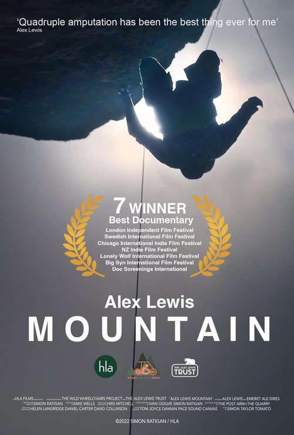

← Back to all premieres

Alex Lewis Mountain Plus Q&A With Director Simon Ratigan
1h 35min
Documentary
Add to Calendar
IMDb
Rotten Tomatoes
Trakt
Quadruple amputee Alex Lewis sets out to prove to his son that anything is possible by attempting to cross the Simien Mountain wilderness and climb Ethiopia's highest peak using the world's first solar-powered, mobility hand-cycle.
Director:
Simon Ratigan
Starring:
Alex Lewis
Trailer
Showtimes & Cinemas
ⓘ
Date
Cinema
Tue 15 Sep
WTW Wadebridge
Book →